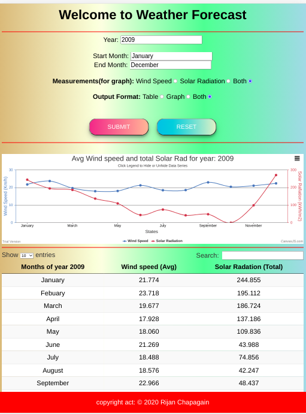
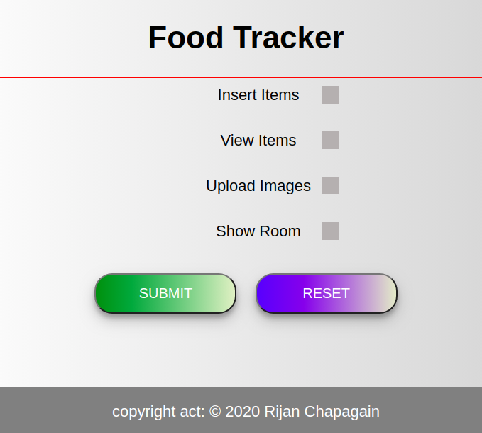
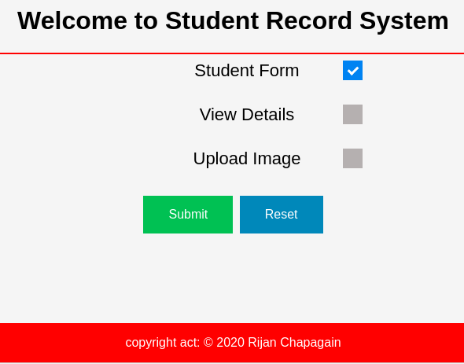

Projects
github.com/rijan-chapagain/weather-forecast
This project was a part of my university individual assignments of unit ICT375 (Advanced Web Programming). In this project, datasets of Murdoch weather station was provided, and i have to develop a SPA (Single Page web Application). This app display different visulization(line graphs) and table according to user inputs timeframe, measure, and format in same page(don't need to reload browser after each selection).

Food Tracker
github.com/rijan-chapagain/foodTrackerThis is designed for home food tracking, while we are staying at home due to COVID-19 pandemic. We wanted to track our daily food consumption and future planning. So I designed this website.

Student Record System (SRS)
github.com/rijan-chapagain/studentRecordSystemSRS is a Student Record System, which is developing a Web client and server architecture- based application, where the server is implemented using Node.js. The client will be a Web browser & communication between the client and server will be via the HTTP protocol.

Hiring Website
github.com/rijan-chapagain/hiring_websiteThis is a hiring website written in JavaScript,Php, html and style with css and bootstrap components. This website is running by specific company, where employee can post jobs and employer can become a member of that company to seek jobs. Company is responsible to train employer and send them to the appropriate employee.